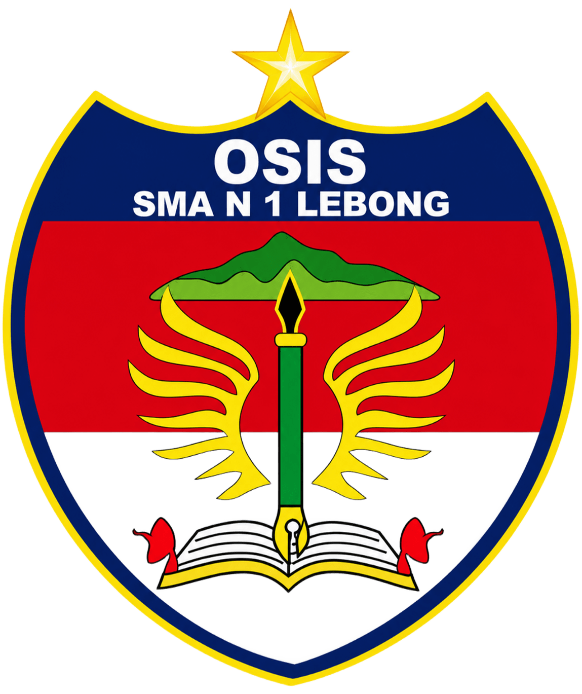
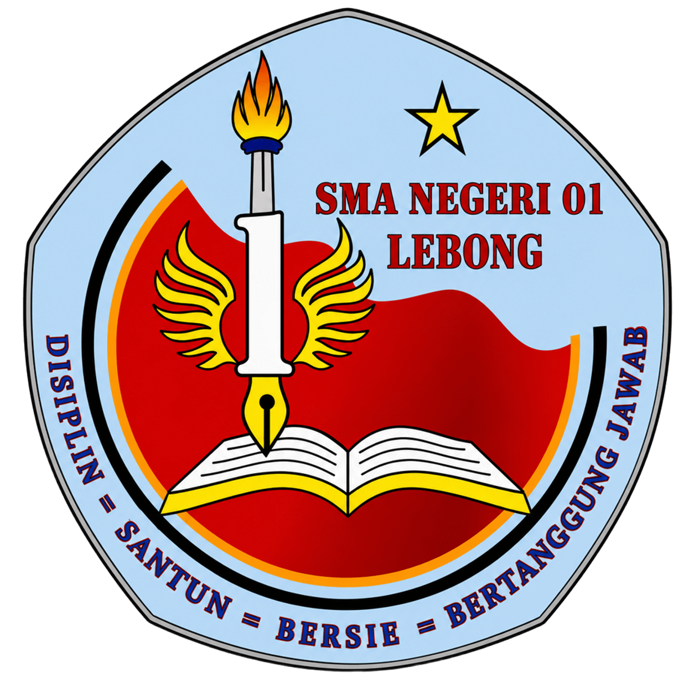
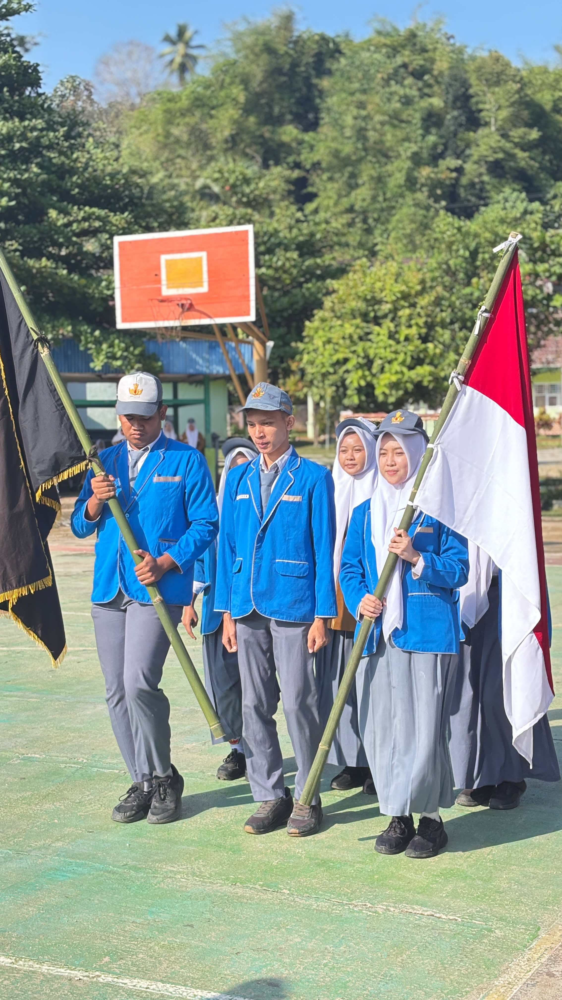
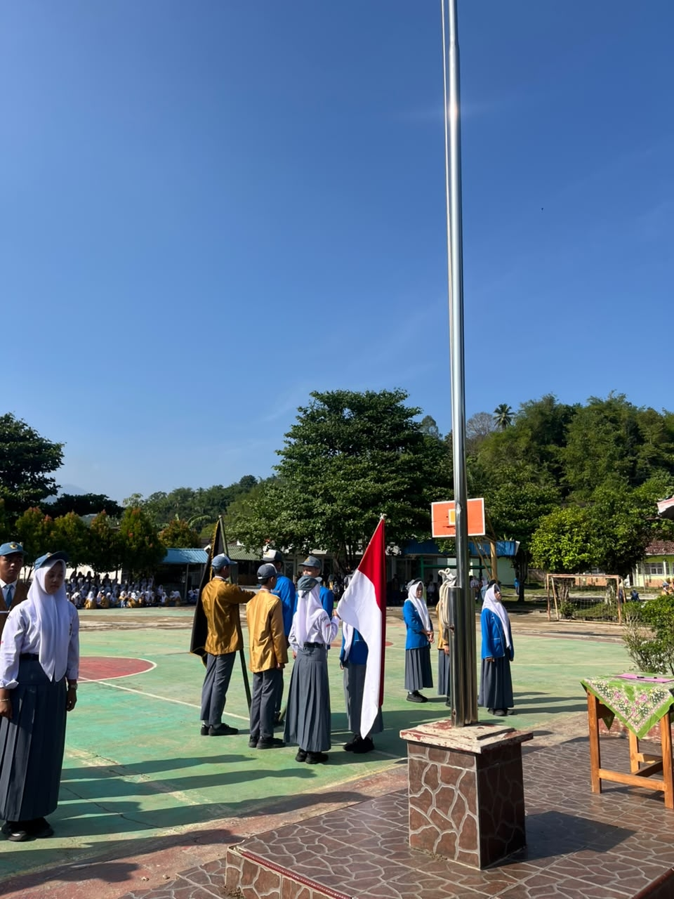
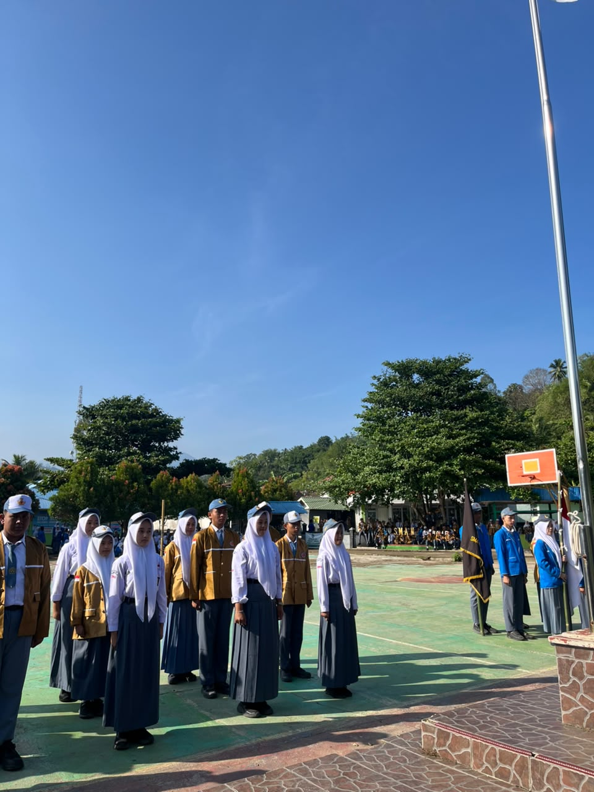

Jujur • Unggul • Aktif • Responsif • Adaptif

Jujur • Unggul • Aktif • Responsif • Adaptif
Website Resmi OSIS SMAN 1 LEBONG
Kenali OSISMenjadikan OSIS SMAN 1 LEBONG sebagai sarana pengembangan karakter, kreativitas, minat dan bakat serta menciptakan generasi yang juara.
Mengembangkan kegiatan positif, meningkatkan kreativitas dan prestasi siswa, serta membangun lingkungan sekolah yang aktif dan responsif.
Jujur
Unggul
Aktif
Responsif
Adaptif
Wadah bagi siswa untuk menyampaikan saran, kritik, dan aspirasi.
Kegiatan untuk mengembangkan kreativitas, minat, bakat, dan prestasi siswa.
Dokumentasi berbagai kegiatan OSIS dan kegiatan siswa di sekolah.
Punya saran atau aspirasi untuk sekolah?
Sampaikan Aspirasi

